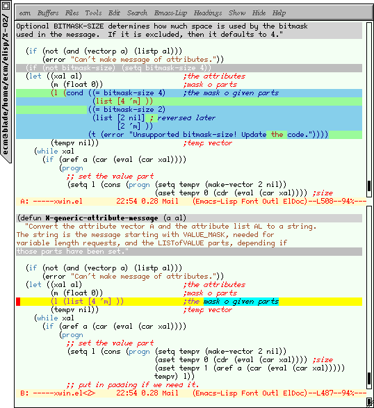
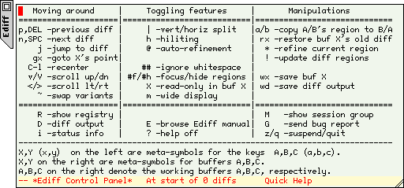

{kind=link}
![[ TABLE OF CONTENTS ]](../gx/indexnew.gif)
![[ FRONT PAGE ]](../gx/homenew.gif)


This column is devoted to making the best use of Emacs, text editor extraordinaire. Each issue I plan to present an Emacs extension which can improve your productivity, make the sun shine more brightly and the grass greener.
Never read that diff output again!
Apply patches interactively!
Merge with ease!
Ediff is a powerful package by Michael Kifer which lets you browse through the differences between files and directories, merge files which have been revised by coworkers, and apply patches interactively. Let's start with the simplest use : eyeballing the differences between two versions of a text file. Either type M-x ediff, or from the menubar go to Tools -> Compare -> Two files (yes, it's something else on the XEmacs menubar). Ediff will prompt you for two files to compare, open them and ponder a bit (while running diff as a subprocess). Emacs will open a small control window, and show you something like this

(for the curious, the window manager is a slighly modified version of Chris Cannam's almost-minimal wmx). Differing lines --or hunks in diff parlance-- in the two files are highlighted in grey, and you can step through them by typing n (next) or p (previous) into the control window. The active hunk is highlighted in color, with the exact words which differ displayed in a separate color (this process is called refining, and is done by Emacs itself, not by diff). Naturally Ediff works best when run under a windowing system, but it does work in degraded mode in the console.
You can use all your normal keybindings in the two buffers being compared; ediff-specific commands must be typed into the control panel. To obtain help, type ? while focus is in the ediff control panel; it should warp into a reassuring help window something like

Ediff can help you merge two files into a third file, a little like the command-line tools sdiff and merge. Type M-x ediff-merge to enter merge mode and be prompted for two filenames. The Emacs frame will then be split in three, with the two files to be merged side by side in windows named respectively A and B, above a buffer containing their merge. It should look a little like this (23 kB). The normal width of your Emacs frame may be a little limiting for two files side by side; you can type m to widen the frame.
For each hunk you will then be able to choose which files to make authoritative (ie which version to include in the merge). Type a to choose the version in the buffer labelled A, b for the other buffer, or + to include both (you can then edit the merge buffer to select bits of both). You can also merge files with respect to an ancestor, if for example two people have made independent changes to a common original.
We come to one of the most amusing uses of Ediff: applying a patch interactively from the comfort of Emacs. No more reading diffs ``by hand'', no more fiddling around with rejects. Type M-x ediff-patch-file to start the fun and be prompted for a patch file and a filename. The Emacs frame will be split vertically with the original file above, and the patched file below. You step from hunk to hunk like for a diff, and can selectively restore certain regions from the original file (undo parts of the patch) by typing a.
Ediff also has an excellent integration with Emacs' version control interfaces, which lets you compare different revisions of a file. Open a file under version control (Emacs detects this automatically) and type M-x ediff-revision; you will be prompted for the two version numbers to compare. Ediff will check out the two revisions and run diff on them. This seamless integration is extended to remote and compressed files : your patches can be compressed or on a distant machine, and Ediff will work things out all by itself. You can even (not tested!) apply a gzipped remote patch to an old version of a compressed file on another machine, so there.
I've only described the most common uses of Ediff : it can also compare three files (ediff3), compare buffers, compare directory contents, and apply multi-file patches. Many aspects of the presentation can be customized. It has a registry of current ediff sessions which may be useful if you're a heavy user. Read the online documentation to know all about it.
For they have entertained cause enough
To draw their swords. But how the fear of us
May cement their divisions, and bind up
The petty difference we yet not know.
Be't as our gods will have't! It only stands
Our lives upon to use our strongest hands.
William Shakespeare, Antony and Cleopatra
A few people pointed out to me that ffap is not included with both Emacsen as I claimed in last month's column, but only with GNU Emacs. XEmacs users can obtain the latest version from Michelangelo Grigni (the author)'s ftp site. I also incorrectly attributed a message from Christopher B. Smith to another Linux user, Christopher B. Browne; my apologies to both Christophers.
In the next issue I'll review emacsclient/gnuserv, a mechanism for
sending messages to a running Emacs process. Don't hesitate to contact
me at <emarsden@mail.dotcom.fr> with comments,
corrections or suggestions (what's your favorite
couldn't-do-without Emacs extension package?). C-u 1000 M-x
hail-emacs !
PS : Emacs isn't in any way limited to Linux, since implementations exist for many other operating systems (and some systems which only halfway operate). However, as one of the leading bits of open-source software, one of the most powerful, complex and customizable, I feel it has its place in the Linux Gazette.
EMACSulation #1, February 1998
EMACSulation #2, March 1998